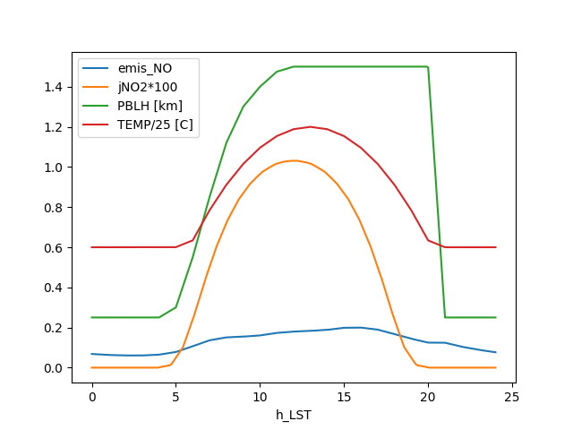
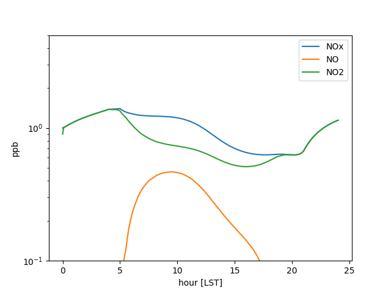
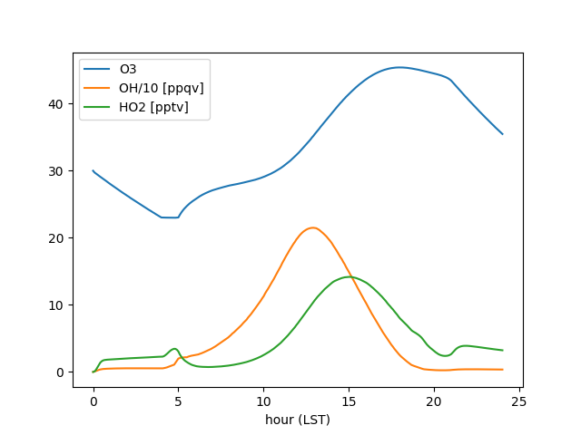

Note
Go to the end to download the full example code
pykpp Tutorial¶
goals: Predict ozone at a monitor using HYSPLIT and pykpp authors: Barron Henderson, Robert Nedbor-Gross, Qian Shu
# Overview
Create an idealized environment (Knote et al., 2015)
Create a simple trajectory model
Chemistry - CB05
Emissions from NEI
Deposition from Knote et al., 2015
Dilution following Knote et al., 2015
Assumes pykpp is installed
python -m pip install http://github.com/barronh/pykpp/archive/main.zip
Knote et al. 2015¶
This example application is based on the Knote et al. (2015) simulation of a typical summer day with CB05. The example here uses the “Summer” PBL and temperature profile. At present, the example uses the a relatively “clean” initial environment (NOx(t=0) = 1ppb).
Trajectory model¶
We’ll use a KPP language to implement the model. Each piece will be saved as a string and then combined to produce an active model.
prepare an air pracel and model environment,
select gas-phase chemical reactions,
add emissions as chemical reactions,
add deposition as chemical reactions
import time
import numpy as np
from pykpp.mech import Mech
from io import StringIO
import pandas as pd
import matplotlib.pyplot as plt
from pykpp.updaters import func_updater
infile = StringIO("""
#INLINE PY_INIT
TEMP = 298.15
P = 99600.
t = TSTART = 0 * 3600.
TEND = TSTART + 3600. * 24
DT = 60.
MONITOR_DT = 3600
StartDate = 'datetime(2010, 7, 14)'
Latitude_Degrees = 40.
Longitude_Degrees = 0.00E+00
KDIL = 0.
PBLH_OLD = 250.
vd_CO = 0.03
vd_SO2 = 1.8
vd_NO = 0.016
vd_NO2 = 0.1
vd_NO3 = 0.1
vd_N2O5 = 4
vd_HONO = 2.2
vd_HNO3 = 4
vd_HNO4 = 4
vd_O3 = 0.4
vd_H2O2 = 0.5
vd_CH3OOH = 0.1
molps_to_molpcm2ps = Avogadro / 1200000**2
add_world_updater(func_updater(Update_M, incr = 360., verbose=False))
add_world_updater(func_updater(Update_THETA, incr = 360., verbose=False))
add_world_updater(interpolated_from_csv(
'summerenv.tsv', 'time', incr = 360., delimiter = '\\t', verbose=False
))
add_world_updater(interpolated_from_csv(
'mean_emis.csv', 'time', incr = 360, verbose=False
))
add_world_updater(func_updater(
Monitor, incr = 7200., allowforce = False, verbose=False
))
#ENDINLINE
#INITVALUES
CFACTOR = P * Avogadro / R / TEMP * centi **3 * nano {ppb-to-molecules/cm3}
ALL_SPEC=1e-32*CFACTOR;
TOTALNOx=1.
M=1e9
O2=.21*M
N2=.79*M
H2O=0.01*M
CH4=1750
CO=100
O3=30.
NO = 0.1 * TOTALNOx
NO2 = 0.9 * TOTALNOx
SO2 = 1
N2O = 320
{B = 210.; what to do about B?}
#MONITOR t/3600.; THETA; PBLH; TEMP; O3;
#LOOKAT THETA; t/3600; PBLH; TEMP; O1D; OH; HO2; O3; NO; NO2; eNOx; TUV_J(6, THETA); emis_NO; emis_NO * molps_to_molpcm2ps / PBLH / 100 / CFACTOR * 3600;
#include cb05cl.eqn
<EMISALD2> EMISSION = ALD2 : emis_ALD2 * molps_to_molpcm2ps / PBLH / 100 ;
<EMISALDX> EMISSION = ALDX : emis_ALDX * molps_to_molpcm2ps / PBLH / 100 ;
<EMISCH4> EMISSION = CH4 : emis_CH4 * molps_to_molpcm2ps / PBLH / 100 ;
<EMISCL2> EMISSION = CL2 : emis_CL2 * molps_to_molpcm2ps / PBLH / 100 ;
<EMISCO> EMISSION = CO : emis_CO * molps_to_molpcm2ps / PBLH / 100 ;
<EMISETH> EMISSION = ETH : emis_ETH * molps_to_molpcm2ps / PBLH / 100 ;
<EMISETHA> EMISSION = ETHA : emis_ETHA * molps_to_molpcm2ps / PBLH / 100 ;
<EMISETOH> EMISSION = ETOH : emis_ETOH * molps_to_molpcm2ps / PBLH / 100 ;
<EMISFORM> EMISSION = FORM : emis_FORM * molps_to_molpcm2ps / PBLH / 100 ;
<EMISHONO> EMISSION = HONO : emis_HONO * molps_to_molpcm2ps / PBLH / 100 ;
<EMISIOLE> EMISSION = IOLE : emis_IOLE * molps_to_molpcm2ps / PBLH / 100 ;
<EMISISOP> EMISSION = ISOP : emis_ISOP * molps_to_molpcm2ps / PBLH / 100 ;
<EMISMEOH> EMISSION = MEOH : emis_MEOH * molps_to_molpcm2ps / PBLH / 100 ;
<EMISNH3> EMISSION = NH3 : emis_NH3 * molps_to_molpcm2ps / PBLH / 100 ;
<EMISNO> EMISSION = NO + eNOx : emis_NO * molps_to_molpcm2ps / PBLH / 100 ;
<EMISNO2> EMISSION = NO2 + eNOx : emis_NO2 * molps_to_molpcm2ps / PBLH / 100 ;
<EMISOLE> EMISSION = OLE : emis_OLE * molps_to_molpcm2ps / PBLH / 100 ;
<EMISPAR> EMISSION = PAR : emis_PAR * molps_to_molpcm2ps / PBLH / 100 ;
<EMISSESQ> EMISSION = SESQ : emis_SESQ * molps_to_molpcm2ps / PBLH / 100 ;
<EMISSO2> EMISSION = SO2 : emis_SO2 * molps_to_molpcm2ps / PBLH / 100 ;
<EMISSULF> EMISSION = SULF : emis_SULF * molps_to_molpcm2ps / PBLH / 100 ;
<EMISTERP> EMISSION = TERP : emis_TERP * molps_to_molpcm2ps / PBLH / 100 ;
<EMISTOL> EMISSION = TOL : emis_TOL * molps_to_molpcm2ps / PBLH / 100 ;
<EMISXYL> EMISSION = XYL : emis_XYL * molps_to_molpcm2ps / PBLH / 100 ;
<DDEPCO> CO = DUMMY : vd_CO / PBLH / 100 ;
<DDEPSO2> SO2 = DUMMY : vd_SO2 / PBLH / 100 ;
<DDEPNO> NO = DUMMY : vd_NO / PBLH / 100 ;
<DDEPNO2> NO2 = DUMMY : vd_NO2 / PBLH / 100 ;
<DDEPNO3> NO3 = DUMMY : vd_NO3 / PBLH / 100 ;
<DDEPN2O5> N2O5 = DUMMY : vd_N2O5 / PBLH / 100 ;
<DDEPHONO> HONO = DUMMY : vd_HONO / PBLH / 100 ;
<DDEPHNO3> HNO3 = DUMMY : vd_HNO3 / PBLH / 100 ;
<DDEPHNO4> PNA = DUMMY : vd_HNO4 / PBLH / 100 ;
<DDEPO3> O3 = DUMMY : vd_O3 / PBLH / 100 ;
<DDEPH2O2> H2O2 = DUMMY : vd_H2O2 / PBLH / 100 ;
<DDEPCH3OOH> MEPX = DUMMY : vd_CH3OOH / PBLH / 100 ;
""")
keywords = [
'DUMMY', 'EMISSION', 'BNZHRXN', 'BNZNRXN', 'ISOPRXN', 'SESQRXN', 'SULRXN',
'TOLHRXN', 'TOLNRXN', 'TRPRXN', 'XYLHRXN', 'XYLNRXN'
]
mech = Mech(
infile, mechname='summercb05', incr=360, add_default_funcs=False,
keywords=keywords
)
# Create time start/stop matrix
nhour = 24.
start_end_ts = np.linspace(
0, nhour, int(nhour) * 12 + 1
).repeat(2, 0)[1:-1].reshape(-1, 2) * 3600
# Capture initial values as "background"
# concentrations
mech.world['ybkg'] = mech.get_y(mech.parsed_world)
# Create specific tolerance values for radical species
# great care should be taken with O1D.
# note that CMAQ EBI solver has no absolute tolerance and
# uses 1 rtol for radicals and rxn counters.
#
atol = np.array([
10 if (spc in ('O', 'O1D', 'HCO3', 'NTR') or spc[-3:] == 'RXN') else 1e-3
for spc in mech.allspcs
])
rtol = np.array([
0.1 if (spc in ('O', 'O1D', 'HCO3', 'NTR') or spc[-3:] == 'RXN') else 1e-5
for spc in mech.allspcs
])
# Start timing the process
runstart = time.time()
# Update world for all interpolated values
mech.world['t'] = start_end_ts.min()
mech.update_y_from_world()
mech.Update_World(forceupdate=True)
Included /home/runner/work/pykpp/pykpp/pykpp/models/cb05cl.eqn
/home/runner/work/pykpp/pykpp/pykpp/parse.py:391: UserWarning: Ignoring DUMMY
warn('Ignoring %s' % spc)
/home/runner/work/pykpp/pykpp/pykpp/parse.py:391: UserWarning: Ignoring ISOPRXN
warn('Ignoring %s' % spc)
/home/runner/work/pykpp/pykpp/pykpp/parse.py:391: UserWarning: Ignoring TRPRXN
warn('Ignoring %s' % spc)
/home/runner/work/pykpp/pykpp/pykpp/parse.py:391: UserWarning: Ignoring SULRXN
warn('Ignoring %s' % spc)
/home/runner/work/pykpp/pykpp/pykpp/parse.py:391: UserWarning: Ignoring TOLNRXN
warn('Ignoring %s' % spc)
/home/runner/work/pykpp/pykpp/pykpp/parse.py:391: UserWarning: Ignoring TOLHRXN
warn('Ignoring %s' % spc)
/home/runner/work/pykpp/pykpp/pykpp/parse.py:391: UserWarning: Ignoring XYLNRXN
warn('Ignoring %s' % spc)
/home/runner/work/pykpp/pykpp/pykpp/parse.py:391: UserWarning: Ignoring XYLHRXN
warn('Ignoring %s' % spc)
/home/runner/work/pykpp/pykpp/pykpp/parse.py:391: UserWarning: Ignoring BNZNRXN
warn('Ignoring %s' % spc)
/home/runner/work/pykpp/pykpp/pykpp/parse.py:391: UserWarning: Ignoring BNZHRXN
warn('Ignoring %s' % spc)
/home/runner/work/pykpp/pykpp/pykpp/parse.py:391: UserWarning: Ignoring SESQRXN
warn('Ignoring %s' % spc)
/home/runner/work/pykpp/pykpp/pykpp/parse.py:385: UserWarning: Ignoring EMISSION
warn('Ignoring %s' % spc)
Species: 65
Reactions: 223
{t:0,t/3600.:0,THETA:1.2E+02,PBLH:2.5E+02,TEMP:2.9E+02,O3:30}
{t:0,t/3600.:0,THETA:1.2E+02,PBLH:2.5E+02,TEMP:2.9E+02,O3:30}
Define a function to dilute with PBL¶
In a trajectory model, we need a PBL dilution
It should only dilute when PBL goes up
When PBL collapses, it should not concentrate
This will be called by the mechanism in between integrations
def UpdatePBL(mech, world):
"""
Defining updater for PBL rise
"""
if 'y' not in world:
return
PBLH_OLD = world['PBLH_OLD']
ybkg = world['ybkg']
y = world['y']
PBLH = mech.world['PBLH']
if PBLH != PBLH_OLD:
KDIL = np.minimum(1, PBLH_OLD / PBLH)
mech.world['KDIL'] = KDIL
world['PBLH_OLD'] = PBLH
ydil = (KDIL * y) + (1 - KDIL) * ybkg
nonzero = ybkg != 2.4195878568940516e-22
y[nonzero] = ydil[nonzero]
else:
mech.world['KDIL'] = 1
mech.update_world_from_y(y)
# Add an updater that depends on the y vector
mech.add_world_updater(func_updater(UpdatePBL, incr=360., verbose=False))
mech.world['PBLH_OLD'] = mech.world['PBLH']
Run Model¶
# Archive initial values
mech.archive()
# For each start/stop combination, update the world and integrate
for t0, t1 in start_end_ts:
# set current time to t0
t = t0
# Get y vector from world state
y = mech.update_y_from_world()
# integrate from t to t1 with initial state of y
# ts, Y = mech.integrate(
# t, t1, y0=y, solver='odeint', mxords=3, mxordn=3, atol=atol,
# rtol=rtol, mxstep = 1000, hmax = 300, verbose=False
# )
ts, Y = mech.integrate(
t, t1, y0=y, solver='lsoda', atol=atol, rtol=rtol, nsteps=1000,
max_step=300, max_order_ns=3, max_order_s=3, verbose=False
)
# Update world to match new time
mech.world['y'] = Y[-1]
mech.update_world_from_y()
mech.Update_World(forceupdate=True)
# Update y vector for mixing of PBL
# Set new time to last time of integration
t = ts[-1]
# Update world from y vector
mech.update_world_from_y()
mech.archive()
# Optionally save to disk
# mech.output()
runend = time.time()
print((runend - runstart), 'seconds')
{t:3625,t/3600.:1,THETA:1.2E+02,PBLH:2.5E+02,TEMP:2.9E+02,O3:28}
{t:7210,t/3600.:2,THETA:1.1E+02,PBLH:2.5E+02,TEMP:2.9E+02,O3:26}
{t:7228,t/3600.:2,THETA:1.1E+02,PBLH:2.5E+02,TEMP:2.9E+02,O3:26}
{t:10830,t/3600.:3,THETA:1.1E+02,PBLH:2.5E+02,TEMP:2.9E+02,O3:25}
{t:14412,t/3600.:4,THETA:97,PBLH:2.5E+02,TEMP:2.9E+02,O3:23}
{t:14434,t/3600.:4,THETA:97,PBLH:2.5E+02,TEMP:2.9E+02,O3:23}
{t:18035,t/3600.:5,THETA:87,PBLH:3E+02,TEMP:2.9E+02,O3:23}
{t:21612,t/3600.:6,THETA:76,PBLH:5.5E+02,TEMP:2.9E+02,O3:26}
{t:21636,t/3600.:6,THETA:76,PBLH:5.5E+02,TEMP:2.9E+02,O3:26}
{t:25238,t/3600.:7,THETA:65,PBLH:8.5E+02,TEMP:2.9E+02,O3:27}
{t:28812,t/3600.:8,THETA:54,PBLH:1.1E+03,TEMP:3E+02,O3:28}
{t:28839,t/3600.:8,THETA:54,PBLH:1.1E+03,TEMP:3E+02,O3:28}
{t:32442,t/3600.:9,THETA:42,PBLH:1.3E+03,TEMP:3E+02,O3:28}
{t:36032,t/3600.:10,THETA:32,PBLH:1.4E+03,TEMP:3E+02,O3:29}
{t:36043,t/3600.:10,THETA:31,PBLH:1.4E+03,TEMP:3E+02,O3:29}
{t:39644,t/3600.:11,THETA:22,PBLH:1.5E+03,TEMP:3E+02,O3:30}
{t:43233,t/3600.:12,THETA:18,PBLH:1.5E+03,TEMP:3E+02,O3:33}
{t:43246,t/3600.:12,THETA:18,PBLH:1.5E+03,TEMP:3E+02,O3:33}
{t:46847,t/3600.:13,THETA:22,PBLH:1.5E+03,TEMP:3E+02,O3:35}
{t:50435,t/3600.:14,THETA:31,PBLH:1.5E+03,TEMP:3E+02,O3:39}
{t:50448,t/3600.:14,THETA:31,PBLH:1.5E+03,TEMP:3E+02,O3:39}
{t:54052,t/3600.:15,THETA:42,PBLH:1.5E+03,TEMP:3E+02,O3:41}
{t:57635,t/3600.:16,THETA:54,PBLH:1.5E+03,TEMP:3E+02,O3:44}
{t:57655,t/3600.:16,THETA:54,PBLH:1.5E+03,TEMP:3E+02,O3:44}
{t:61258,t/3600.:17,THETA:65,PBLH:1.5E+03,TEMP:3E+02,O3:45}
{t:64836,t/3600.:18,THETA:76,PBLH:1.5E+03,TEMP:3E+02,O3:45}
{t:64860,t/3600.:18,THETA:76,PBLH:1.5E+03,TEMP:3E+02,O3:45}
{t:68465,t/3600.:19,THETA:87,PBLH:1.5E+03,TEMP:2.9E+02,O3:45}
{t:72036,t/3600.:20,THETA:97,PBLH:1.5E+03,TEMP:2.9E+02,O3:45}
{t:72066,t/3600.:20,THETA:97,PBLH:1.5E+03,TEMP:2.9E+02,O3:45}
{t:75667,t/3600.:21,THETA:1.1E+02,PBLH:2.5E+02,TEMP:2.9E+02,O3:43}
{t:79241,t/3600.:22,THETA:1.1E+02,PBLH:2.5E+02,TEMP:2.9E+02,O3:41}
{t:79270,t/3600.:22,THETA:1.1E+02,PBLH:2.5E+02,TEMP:2.9E+02,O3:41}
{t:82872,t/3600.:23,THETA:1.2E+02,PBLH:2.5E+02,TEMP:2.9E+02,O3:38}
15.545097827911377 seconds
Make Plots¶
data = mech.get_output()
data['h_LST'] = data['t'] / 3600
data['NOx'] = data['NO'] + data['NO2']
data['jNO2*100'] = data['TUV_J(6,THETA)'] * 100
data['PBLH [km]'] = data['PBLH'] / 1e3
data['TEMP/25 [C]'] = (data['TEMP'] - 273.15) / 25.
data['OH/10 [ppqv]'] = data['OH'] * 1e5
data['HO2 [pptv]'] = data['HO2'] * 1e3
fig, ax = plt.subplots()
data.set_index('h_LST')[['emis_NO', 'jNO2*100', 'PBLH [km]', 'TEMP/25 [C]']].plot(ax=ax)
fig.savefig('knote_physical.png')
fig, ax = plt.subplots()
data.set_index('h_LST')[['NOx', 'NO', 'NO2']].plot(ax=ax)
ax.set(xlabel='hour [LST]', ylabel='ppb', ylim=(.1, 5), yscale='log')
fig.savefig('chemical_nox.png')
fig, ax = plt.subplots()
data.set_index('h_LST')[['O3', 'OH/10 [ppqv]', 'HO2 [pptv]']].plot(ax=ax)
ax.set(xlabel='hour (LST)')
fig.savefig('chemical_ozone.png')
- 
- 
- 
Total running time of the script: ( 0 minutes 16.635 seconds)